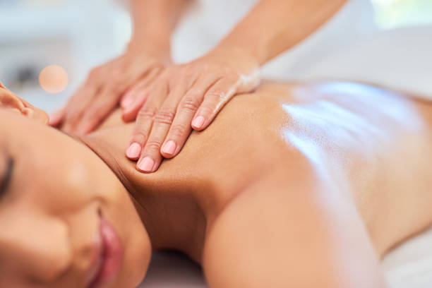

What essential oils are commonly used in Fort Lauderdale aromatherapy massages?
Posted by on 2024-06-03
Aromatherapy massages in Fort Lauderdale often use a variety of essential oils to enhance the overall experience and benefits of the treatment. These essential oils are carefully selected for their therapeutic properties and pleasant scents, creating a relaxing and rejuvenating atmosphere during the massage session.
Some commonly used essential oils in Fort Lauderdale aromatherapy massages include lavender, peppermint, eucalyptus, chamomile, and rosemary. Lavender oil is known for its calming and stress-relieving properties, making it a popular choice for relaxation massages. Peppermint oil has a cooling effect on the skin and can help alleviate muscle tension and headaches. Eucalyptus oil is often used for its decongestant properties, making it an excellent choice for sinus relief during massages.
Chamomile oil is well-known for its soothing effects on the mind and body, helping to promote relaxation and improve sleep quality. Rosemary oil has stimulating qualities that can help boost circulation and relieve muscle soreness. Each of these essential oils offers unique benefits that can be tailored to individual needs and preferences during an aromatherapy massage.
In addition to these common essential oils, Fort Lauderdale aromatherapists may also incorporate other oils such as bergamot, lemon, or tea tree oil depending on the client's specific concerns or goals for the massage session. Whether you are looking to relax, relieve pain, improve circulation, or simply enjoy a sensory experience, there is an essential oil blend that can enhance your overall well-being during an aromatherapy massage in Fort Lauderdale.
Overall, essential oils play a crucial role in enhancing the effectiveness of aromatherapy massages in Fort Lauderdale by providing both physical and emotional benefits to clients. By carefully selecting high-quality oils with proven therapeutic properties, aromatherapists can create a personalized experience that promotes relaxation, rejuvenation, and overall wellness for each client who chooses to indulge in this luxurious treatment option.